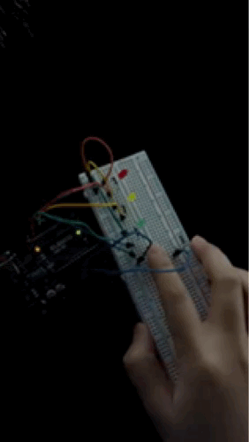
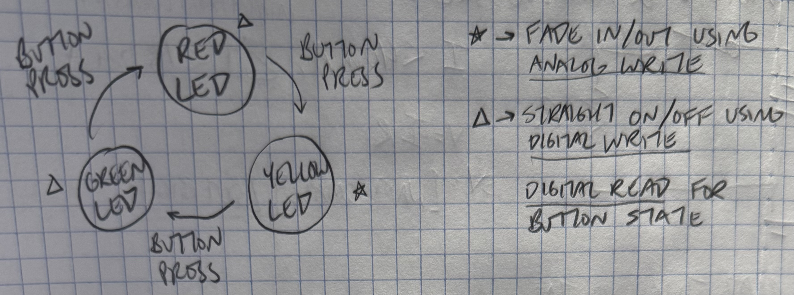
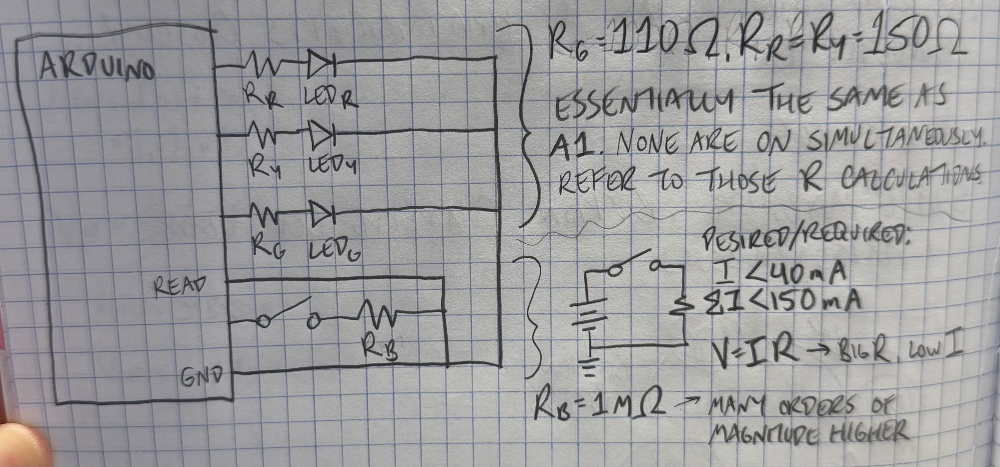
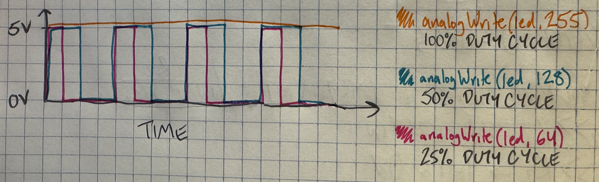
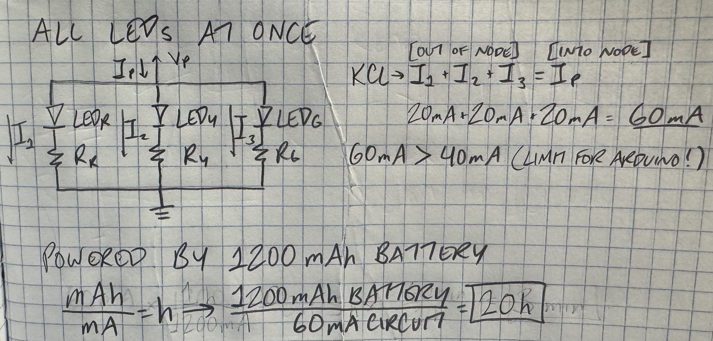
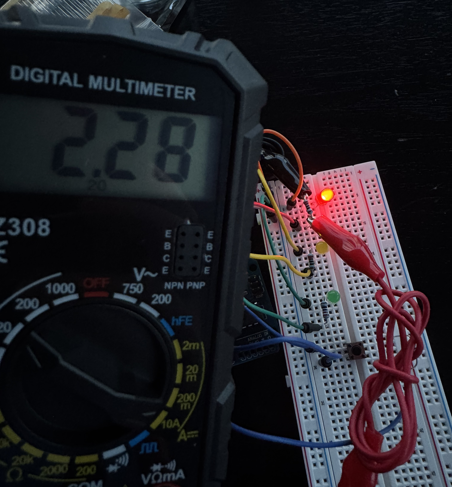

"You work for a toy company, and the chief innovation officer wants you to make a prototype for a new light-up toy.
You will create a schematic, circuit, and code that uses several LEDs (at least 3);
a button, tilt switch, or a switch you make yourself;
a for-loop;
digitalWrite();
digitalRead();
and analogWrite().
Document your project on your webpage."
Like last time, I started by writing out the requirements of the assignment and brainstorming some ideas. I thought, "three LEDs, three colors... a stoplight!" Thus, the clicky stoplight traffic control toy was born. (No promises that it sells, CIO.)
I drew a state diagram to more clearly describe how my stoplight system would work.

I drew a schematic to visualize the circuit system, which included three LEDs and a button.
I realized that the LED situation was functionally the same as my circuit in A1.
Just like last time, none of the LEDs would be on at the same time, so I reused A1's LED calculations. Like last time, I went with 220Ω for each of the LED resistors.
For the button resistor, I wanted to keep the current under 40mA.
The voltage (5V) was to stay constant, and I wanted a low current.
I used Ohm's law (V=IR) to determine that a high resistor value would result in a very low current draw.
Therefore, I chose to use the 1MΩ resistor since it was several magnitudes of order larger than the voltage.

I built my circuit using:
I then wrote some code so the LED color would rotate between each color with the push of the button. I coded the yellow LED to fade in and out (to give the toy drivers more time to slow their toy cars down to a stop) (and so I could use analogWrite()).
// setting constants for my pin connections
const int red = 12;
const int yellow = 10; // PWM pin
const int green = 8;
const int button = 7;
// setting initial state for variable reading button status
int buttonState = 0;
// setting value to tell what color is on and what is next
// set to green first so first press initiates red
int color = 2; // 0 is red, 1 is yellow, 2 is green
void setup() {
// initializing LEDs as outputs
pinMode(red, OUTPUT);
pinMode(yellow, OUTPUT);
pinMode(green, OUTPUT);
// initializing button as input
pinMode(button, INPUT);
// start with everything off
digitalWrite(red, LOW);
analogWrite(yellow, 0);
digitalWrite(green, LOW);
}
void loop() {
// read button state
buttonState = digitalRead(button);
// if button is pressed and color is red, red off and fade yellow in
if (buttonState == HIGH && color == 0) {
digitalWrite(red, LOW); // turn red off
color = 1; // yellow is on
// fade yellow on
for (int val = 0; val<=75; val++) {
analogWrite(yellow, val);
delay(15);
}
// if button is pressed and color is yellow, fade yellow out and green on
} else if (buttonState == HIGH && color == 1) {
// fade yellow out
for (int val = 75; val>=0; val--) {
analogWrite(yellow, val);
delay(15);
}
color = 2; // green is on
digitalWrite(green, HIGH); // turn green on
// if button is pressed and color is green, green off and red on
} else if (buttonState == HIGH && color == 2) {
Serial.println("RED ON - waiting");
digitalWrite(green, LOW); // turn green off
color = 0; // red is on
digitalWrite(red, HIGH); // turn red on
delay(2000); // needs a nonzero delay so the transition isn't instantaneous
}
}
I uploaded my code and controlled some serious toy traffic! Gotta get to my paperwork soon; one of the toy drivers ran a red and was caught by the toy red light camera.
1: Draw a chart where the X axis is time and the Y axis is voltage. Draw 3 lines representing the voltage across an LED with analogWrite(led, 64), analogWrite(led, 128), and analogWrite(led, 255).

2: If all your LEDs were on simultaneously, what would the total current draw be? Is this above or below the total Arduino current draw limits? If all your LEDs were on, how long would your circuit run if powered by a 1200 mAh battery?
According to Kirchoff's Current Law, the sum of the current going into a node is the sum of the current coming out of the node. For three 20mA LEDs, the current draw would be 60mA, which is over the 40mA limit for our Arduino UNO units.
3: Measure and record the actual voltage across one of your LEDs when it's on. How does this compare to the theoretical forward voltage for your LED color?
My multimeter read the red LED at 2.28V. The theoretical value I found for my calculations was 2V, so this voltage is higher. Using KVL, we know that a higher LED voltage would result in a lower resistor voltage (since the voltage of the Arduino is a constant 5V). Using Ohm's Law (R=V/I), a smaller V and unchanged I would yield a smaller resistance value, so I could have used a resistor with a lower resistance. However, it's good practice to overshoot the resistor's resistance value for safety.
4: Did you use AI tools in completing this assignment? If yes, please provide details on how/when, as well as a brief reflection. If no, you can either leave this question blank, or provide other information if you'd like.
I used AI for one thing: troubleshooting my Arduino code. After meticulously coding and commenting, I tested my circuit, but the behavior wasn't what I expected. Instead of moving from red to yellow to green (and back to red), the circuit was simply rotating between yellow and green.